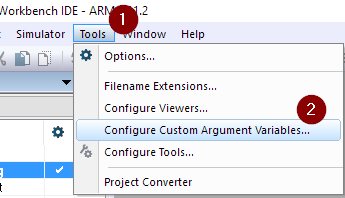
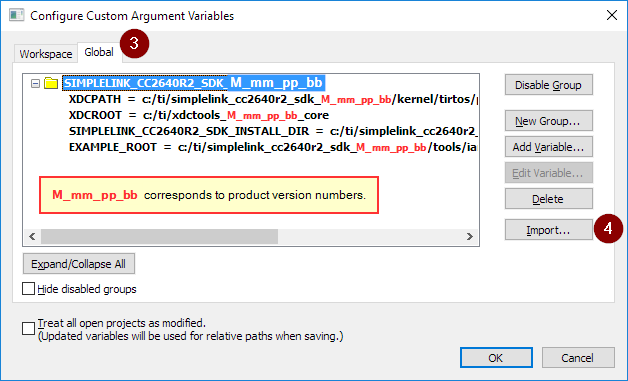
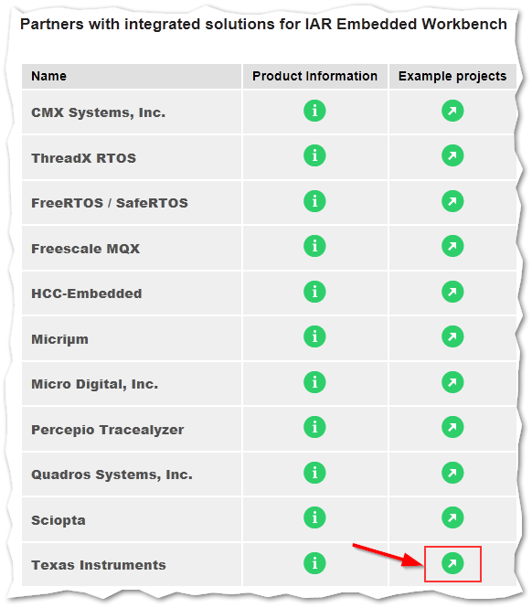
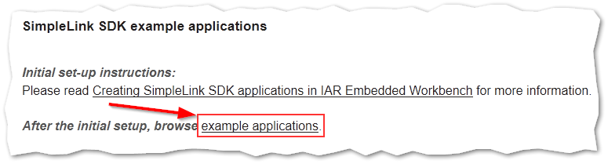
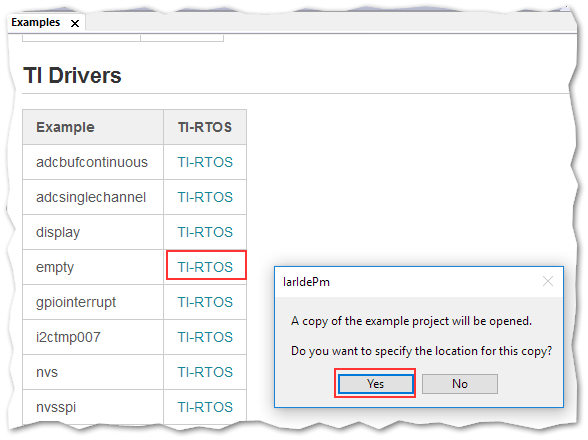

Developing with IAR¶
Installing IAR¶
The IAR toolchain contains many features beyond the scope of this document. More information and documentation can be found at IAR.com.
Check the EasyLink 2.70.0 release notes to see which IAR version to use and any required workarounds. Object code produced by IAR may differ in size and performance as compared to CCS produced object code.
The following procedure describes installing and configuring the correct version of IAR and the necessary tools.
Install IAR Embedded Workbench for Arm
Download and install IAR EW ARM
To get IAR, choose one of the following methods:
- Download the IAR Embedded Workbench 30-Day Evaluation Edition – This version of IAR is free, has full functionality, and includes all of the standard features. The size-limited Kickstart evaluation option is not compatible with this SDK.
- Purchase the full-featured version of IAR Embedded Workbench – For complete BLE application development using the CC2640R2, TI recommends purchasing the complete version of IAR without any restrictions. You can find the information on purchasing the complete version of IAR.
Attention
The version required is stated in the release notes. Opening IAR project files with a previous version of IAR may cause project file corruption.
Show Build Messages
TI recommends showing all the build output messages for full verbosity during building. To do this, go to Tools -> Options and set Show Build Messages to All (see Figure 15.)

Figure 15. Show All Build Messages in IAR
Importing TI Drivers IAR Projects¶
IAR projects for TI Drivers must be imported rather than opened. All TI
Drivers project are created from the original sources in
<SDK_INSTALL_DIR>/source/ti/drivers. Because of this
difference, you must not open TI Drivers .eww IAR projects directly from
within the SDK.
Here are the steps on how to import a TI Drivers project.
Error
Do NOT try to open the .eww projects in
<SDK_INSTALL_DIR>/source/ti/drivers directly in IAR!
Doing so will cause IAR to generate project files directly in the example you opened. The result of this is a project that does not open the correct source files and if you try to import the project afterwards with the import procedures listed below, not all source files will be imported into the project!
Open the version of IAR that is stated in the release notes.
Globally import the .custom_argvars file provided by the SimpleLink CC2640R2 SDK:
Select Tools -> Configure Custom Argument Variables
Figure 16. Configuring Custom Argument Variables
Select the Global Tab and click on the Import button
Figure 17. Global Custom Variable Imports
Select
<SDK_INSTALL_DIR>/tools/iar/SIMPLELINK_CC13XX_CC26XX_SDK.custom_argvars
Now you can import TI Drivers examples
Open Help -> Information Center, and click on Integrates solutions.
Go into the Texas Instruments Example projects.
Figure 18. Texas Instruments Example projects
Click on example applications
Figure 19. To go to the list of available
TI DriversexamplesClick on the TI-RTOS link for the
TI Driversexample you want to import.Figure 20. Select the project you want to import and specify where you want to save it.
At this stage, you have imported a new
TI Driversproject.
Accessing Preprocessor Symbols¶
Various C preprocessor symbols may need to be set or adjusted at the project level. The following procedure describes how to access and modify preprocessor symbols.
- Open the Project’s Options and select the C/C++ Compiler Category.
- Open the Preprocessor tab.
- View the Defined symbols box (see Figure 21.).
- Add or edit the preprocessor symbols.

Figure 21. IAR Defined Symbols Box
Certain projects also use a list of predefined symbols found in the
Tools -> defines project folder.
Accessing Linker Symbols¶
Linker symbols may need to be set or adjusted at the project level in order to control the memory layout of the generated image. The following procedure describes how to access and modify linker symbols.
- Open the Project’s Options and select the Linker Category.
- Open the Config tab.
- View the Configuration File symbol definitions box (see Figure 22.).
- Add or edit the preprocessor symbols.

Figure 22. IAR Defined Symbols Box
{kind=link}